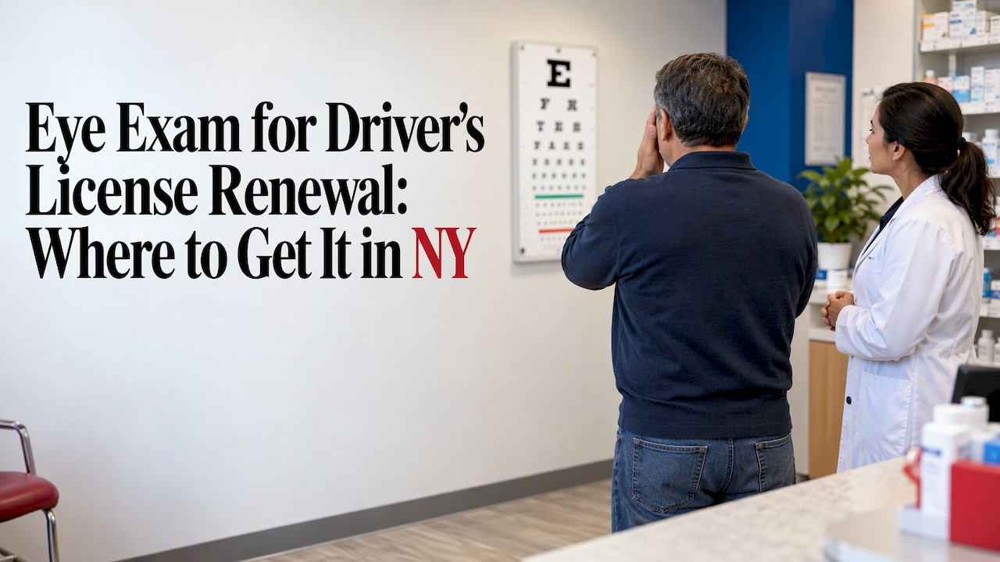
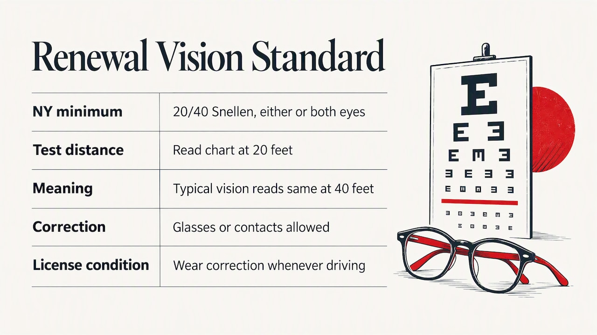
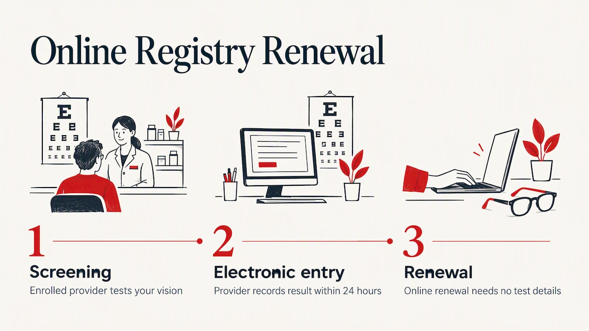

If you are renewing a New York driver license, you do not need a full eye exam. You need to pass a short vision test that shows acuity of at least 20/40, with or without glasses or contacts. You can take it at a DMV office, or have an authorized provider do it beforehand. Many New Yorkers choose the second route because it can let them renew online, with no paperwork to carry.
This guide explains what the test measures, who is allowed to give it, what to bring, and what to do if you are worried about the result. It is written for New York drivers, and it also notes how a few other states handle the same requirement, because the rules are not the same everywhere.
TL;DR
- New York requires a passing vision test to apply for or renew a license: acuity of at least 20/40 in either or both eyes, with or without corrective lenses.
- You can take the test at a DMV office, or at an authorized provider who reports your result to the DMV. Results are valid for 12 months.
- A DMV-style screening is not a medical eye exam. It will not check for glaucoma or cataracts, so keep up with regular visits to an eye doctor.
- We offer DMV vision tests at our Forest Hills pharmacy. Details are on our DMV vision test page.
Table of Contents
- What the renewal vision test actually is
- Your three options in New York
- How long your result is good for
- What to bring to the test
- How to prepare and pass
- What if you do not pass?
- Removing a corrective lenses restriction
- Perspective: why a pharmacy screening makes sense
- Getting your DMV vision test in Forest Hills
- How other states handle it
- A simple timeline for renewing
- FAQ
- Sources
What the renewal vision test actually is
People often search for an “eye exam” for renewal, but what the DMV asks for is a vision screening. It checks one thing: whether you can read a standard chart well enough to meet the minimum for safe driving. In New York, that minimum is 20/40 on the Snellen scale, in either or both eyes, with or without correction.
In plain terms, 20/40 means that at 20 feet you can read what a person with typical vision can read at 40 feet. You are allowed to wear your glasses or contacts during the test. If you need them to pass, the DMV adds a corrective lenses restriction to your license, so you must wear them whenever you drive.
That restriction is not a penalty. It simply records that your vision meets the standard when corrected, which keeps you legal and tells others the condition under which you are licensed.

How it differs from a comprehensive eye exam
A comprehensive exam by an optometrist or ophthalmologist looks at eye health: pressure, the optic nerve, the retina, the lens, and your prescription. A renewal screening does none of that. It is a pass or fail check of acuity, usually with a chart or a screening device.
This matters for two reasons:
- Passing the screening does not mean your eyes are healthy. Conditions such as glaucoma and cataracts can develop slowly without obvious symptoms.
- Failing the screening does not mean you cannot drive. It usually means you need an updated prescription or a medical eye exam.
Your three options in New York
The DMV lets you take the test at a DMV office or have a provider submit your results. In practice, that gives you three routes.
| Option | How it works | Best for |
|---|---|---|
| Test at the DMV office | You take the screening when you renew or replace your document in person | People already going to the DMV and confident in their vision |
| Provider enrolled in the Vision Registry | The provider enters your result online, and you renew online or by mail with nothing to attach | Anyone who wants to renew without a trip to the DMV |
| Vision Test Report (MV-619) | A qualified provider completes and signs the paper form, and you bring or send it | Providers who are not enrolled in the registry, or when you prefer paper |
The Online Vision Registry
The registry is the most convenient route. The DMV explains that doctors, nurses, vision care professionals and their supervised staff have long been authorized to do these tests. Pharmacists, staff supervised by pharmacists, and organizations authorized by the DMV can also do the screening if they are enrolled in the registry.
When an enrolled provider tests you, the result is entered electronically, and the DMV requires that to happen within 24 hours. Then you can renew online without typing in any test details. If you renew by mail, you do not need to send the MV-619 form.

Two cautions from the DMV: the provider may charge a fee, and the DMV does not set the amount. Some providers also require you to be their patient. Ask both questions before you go.
You can search for enrolled providers by ZIP code through the DMV’s registry locator, which the DMV vision page links to.
The paper form, MV-619
If you use the paper route, the Vision Test Report (MV-619) has to be completed by a qualified professional. The DMV’s list includes physicians, physician’s assistants, ophthalmologists, optometrists, opticians, registered nurses and nurse practitioners. Bring the form to your DMV office when you renew in person, or follow the instructions printed on it for renewing by mail.
How long your result is good for
The test has to be recent. New York treats results as valid for 12 months, so a screening done a year and a half ago will not help. Other states use similar windows. Kentucky, for example, requires its certification form to be completed within 12 months of renewal.
A practical rule: schedule your screening within a month or two of your renewal date, not the day you remember. Then if something turns up, you have time to fix it.
What to bring to the test
- Your glasses or contact lenses, the ones you actually wear to drive. Testing without them when you need them will only get you a failed result.
- Your current driver license or permit, so the provider can enter your details correctly.
- Your renewal notice, if you received one, in case it has an ID number or other details the form asks for.
- Payment, if the provider charges a fee. Ask in advance, since the DMV does not set provider prices.
If you wear reading glasses only, tell the tester. The distance test needs your distance correction.
How to prepare and pass
There is no studying for an eye chart, and trying to memorize it is a bad idea: the point is to learn whether you can safely see. But a few habits help you give an honest, accurate result.
- Get enough sleep and avoid screen strain right before the test. Tired eyes read worse.
- Clean your lenses. Smudged glasses can cost you a line on the chart.
- Wear the lenses you drive in. If your prescription has changed and your old glasses no longer work well, get that sorted first.
- Read slowly and take your time. Rushing causes mistakes on letters you could read.
- Do not rely on one eye being strong. The New York standard counts either or both eyes, but you want both working well for depth and peripheral awareness.
If you already know your vision has changed, such as night glare, trouble with road signs, or headaches after reading, treat that as the reason to see an optometrist or ophthalmologist before you renew, not after.
What if you do not pass?
Failing the screening does not end your driving. In most states you are referred to an eye care professional for a fuller exam and, if needed, new lenses. Kentucky’s process is typical: drivers who do not pass at a regional office are referred to a vision specialist for a secondary exam and corrective lenses, and that specialist can complete the state form.
In New York, the practical steps are similar:
- See an optometrist or ophthalmologist and get your prescription updated.
- Ask the professional to complete the MV-619 or enter the result in the registry.
- Renew once you have a passing result.
If you anticipate trouble, it is often more efficient to see your own eye doctor first rather than risk failing at the counter. And if your license is near expiry, do not wait. Some states let you renew early, and Kentucky, for instance, allows renewal up to six months before expiration. Check your own state’s window.
Removing a corrective lenses restriction
If you had a corrective lenses restriction and no longer need it, for example after surgery, you can have it removed. The DMV says you can remove the restriction online if your vision test provider is enrolled in the Online Vision Registry and enters a passing result without correction. Do not drive without lenses until the restriction is actually removed from your license.
Perspective: why a pharmacy screening makes sense
Most people think of the DMV vision test as a chore tucked inside a bigger chore. At our pharmacy in Forest Hills, we see it differently: it is a five-minute task that should fit around your day, not eat a morning.
Patients already come to us for prescriptions, vaccines and blood pressure checks, and they know their pharmacist by name and can text them directly. A renewal screening belongs in that same relationship. You ask a question, you get a straight answer, and you are not left guessing what form you need.
We also want to be honest about the limit of what we do. A renewal screening confirms you meet the minimum for driving. It does not replace an eye exam, and if what you tell us about your eyes worries us, we will say so and suggest you see an eye doctor. Some medications can affect vision as well, and our pharmacists can review that with you privately, including through medication therapy management.
— Mega
Getting your DMV vision test in Forest Hills
Mega Health Rx Pharmacy in Forest Hills, Queens offers DMV vision tests as one of its community services, alongside notary, bill pay and money orders. If you are renewing a New York license, see our DMV vision test page for what to bring and how to reach us. We do not publish a price for the screening here, so text or call us to confirm the current details before you come.
If you are already a patient, your assigned pharmacist is the easiest person to ask. And if you are picking up medication anyway, you can combine errands: our free blood pressure check or a walk-in vaccination can happen on the same visit.
How other states handle it
If you read this from outside New York, the details change but the pattern holds. Always confirm on your own state agency’s site.
- Kentucky: Since January 1, 2025, a vision screening is required for every renewal. It is free at regional offices, or an outside provider can complete the state form.
- Utah: An eye test is required on original, renewal, lapsed and replacement licenses, and drivers 65 and older must pass one at renewal.
- Maryland: The MVA says you must meet its vision requirements to get or renew a commercial or non-commercial license, with several ways to complete and submit your screening.
Commercial drivers and drivers with medical conditions may face additional vision standards, so check with your state agency if that applies to you.
A simple timeline for renewing
- Check your expiration date and your state’s earliest renewal window.
- Decide your route: DMV office, registry provider, or paper form.
- Book a screening one to two months before expiry. If you suspect a vision change, book an eye doctor first.
- Bring your lenses and ID.
- Confirm the result was submitted. With a registry provider, results should be entered within 24 hours.
- Renew online, by mail or in person, following your state’s steps.
FAQ
Do I have to take an eye test to renew my driver license in New York?
Yes. New York requires a passing vision test to apply for or renew a license. You can take it at the DMV or use a provider who reports the result or completes the MV-619 form. The result must meet 20/40 in either or both eyes, with or without lenses.
Where can I get a vision test for the DMV near me?
You can take it at a DMV office or at an authorized provider. Enrolled providers are listed in the DMV’s Vision Registry, searchable by ZIP code. In Forest Hills, we offer DMV vision tests at our pharmacy, so contact us for current details.
Can I renew online after a test at a pharmacy or doctor’s office?
Yes, if the provider is enrolled in the DMV Online Vision Registry and enters your result. You can then renew online without entering test information. If the provider is not enrolled, you will need the signed MV-619 form instead.
What happens if I fail the vision test?
You will usually be sent to an eye doctor for an exam and, if needed, new glasses or contacts. Once you have a passing result with your corrected vision, you can renew. A corrective lenses restriction may be added to your license.
Does the DMV test replace a regular eye exam?
No. It only checks whether you meet the minimum acuity for driving. It does not look for eye disease, so keep seeing an optometrist or ophthalmologist on the schedule they recommend.
Sources
- Vision Requirements and Restrictions, NY DMV
- Vision Requirements and Restrictions (full page), NY DMV
- Online Vision Registry, NY DMV
- Vision Test Report (MV-619), NY DMV
- Vision Screening Requirement, Kentucky DRIVE
- Renew a Driver’s License or Permit, Kentucky DRIVE
- Vision Requirements for Drivers, Utah Driver License Division
- Vision Tests & Requirements, Maryland MVA
Recommended
Questions? Ask your pharmacist
Mega Health Rx is an independent pharmacy in Forest Hills with free delivery anywhere in NYC. Switch in about a minute and we handle every call.